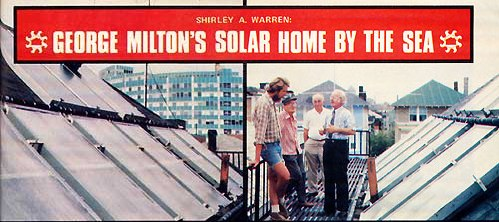
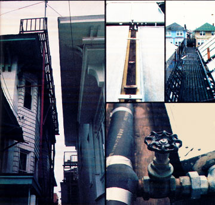

Got a complicated old house that "just isn't right" for a solar conversion? Take heart. Even the most intractable 19th century apartment building can be retrofitted with solar heating . . . as George Milton of Atlantic City, New Jersey recently proved.
About a year and a half ago, George Milton (a retired designer living in Atlantic City, New Jersey) decided to retrofit his 85-year-old home with solar water and space heating. Trouble was, the old building's roof slanted northwest and southeast (no side faced directly into the sun) . . . and there was no easy way to transport solar collectors up to the top of the fourstory structure . . . and there could be no guarantee that the solar panels-once in place-wouldn't be damaged by occasional hurricane-force winds (or vandals). Then too, it seemed likely that-since the house sits just 385 feet from the beach-the solar collectors would be shielded from the sun by fog much of the time anyway.
In short, George Milton's aging apartment building (several other families occupy the dwelling along with the Miltons) is hardly what you'd call the perfect candidate for a solar conversion. That didn't keep George from going ahead with his solar heating plans, however. . . and it didn't keep him from (ultimately) succeeding!
Since he was fresh out of working capital, the first thing Mr. Milton had to do was find financing for his project. But that was easier said than done since, as George soon learned, Atlantic City financial institutions had red-lined (i.e., blacklisted) the area in which the Milton home was located. George eventually found the money he needed . . . but only after making the rounds of banks in Philadelphia, some 50 miles away.
Next, Milton applied for a building permit ... and immediately ran into trouble. "For some reason, the city invoked all kinds of regulations to stop me," George recalls, adding: "It was only after a threemonth wait-and after I got some publicity on the radio-that I finally received the necessary papers."
About that time, the retired designer began to shop-via mail-order catalogs-for solar heating hardware. Eventually he sent away for a total of nine flat-plate collectors: six from a supplier in California and three from a Connecticut firm. Before long, the Milton home's attic floor was littered with panels, pipes, fittings, controls, and other bits of equipment ... equipment that George knew he would need help in sorting out and putting together.
Mr. Milton found the help he needed in the person of James Ballantine, local engineer and longtime (since 1957, in fact) solar energy experimenter.
Ballantine took one look at Milton's attic cache and decided it was a nightmare. "For one thing," the engineer explains, "George had bought two different brands of solar collectors made of two dissimilar materials. The California panels contained galvanized iron pipes, while the panels shipped from Connecticut featured copper plumbing. This meant we had to take special precautions when linking the collectors together, in order to avoid corrosion due to galvanic action.
"In addition, the solar panels from California had their inflow/outflow pipes com ing out their ends, making flush side-by-side mounting of the units impossible. Also, those six collectors had been shipped without their glass covers and we had to decide whether to buy 100-plus square feet of glass or use a plastic glazing material.
"We had other problems too . . . many of which were-I'm afraid-the result of George's having bought in haste. We simply put our heads together, however, and tried to make the best of a bad situation."
The single biggest challenge that George Milton, Jim Ballantine, and their rapidly gathering corps of volunteer workers faced in carrying out the solar conversion was mounting the nine solar collectors atop Milton's house. This was an especially difficult task for two reasons: First, there wasn't enough room on the small, steeply pitched (45°) roof to work safely. Second, there was no easy way to get the half ton (roughly) of collectors-and associated hardware-up there in the first place. (George had discovered-too late!-that his attic windows were too small to let the 3' X 6' panels through.)
Milton took care of the first problem by having a local firm install an iron catwalk (cost: $2,500) along the southeast-facing side of the building's roof. This would give the volunteers a safe platform on which to stand while working, and would-in additionserve as a permanent inspection walkway from which George, Jim, or any one else could check the collectors while they were in operation.
Next, George and his corps of workers began to devise ways of raising the nine solar panels from street level up to the top of the four-story building. At first, the crew tried hoisting the collectors up individually using a hand winch, but this proved to be "murder" on the winch operator's back. Ultimately, the panels were carried up-one by one-by pairs of men climbing side-by-side ladders. (The collectors were first hoisted in this manner to the garage roof, then they were taken from there on up to their final resting spot.)
As each panel arrived on the roof, styrofoam insulation was added to its backside (to supplement the unit's internal fiberglass insulation), then the collector was anchored firmly to the roof by means of aluminum bars cinched down with 3/8" X8" steel bolts. (This arrangement resulted in the collectors having an angle to the horizon of just 45°-the same as the roof's pitch-rather than the more desirable, for this latitude, 60°. It also resulted, however, in a very secure attachment of the panels to the roof: Already, the nine collectors have survived Hurricane Belle, two severe thunderstorms, and a northeaster without any damage or slippage.)
Once the flat-plate collectors were in place-and the workers had finished tying them together (using dielectric couplings where necessary)-all the exposed pipes were insulated with sleeves of Armaflex, a black foam rubber material. (George had wanted to encapsulate the pipes in extruded styrofoam, but this turned out to be too difficult.)
Herebriefly-is how the Milton/Ballantine solar heating system (which was completed in May of 1976) works:
The collectors on Milton's roof are connected (by pipes) not only to each other but to a set of heat exchange coils inside a 1,000-gallon storage tank (actually, a heating oil tank purchased new for $300) in George's cellar. Inside the tanksurrounding those heat exchange coils-are 1,000 gallons of water. Thus, as the fluid passing through the rooftop collectors becomes warmed by the sunand as this liquid circulates through the heat exchanger in the giant storage tank-the water in the storage tank is in turn warmed ... to a fairly constant (if the weather's good) 120°F.
Now it so happens that there are two more sets of heat exchange coils inside the 1,000-gallon cellar tank. One is linked with the house's conventional space-heating system. Here, the water returning from the space-heating radiators located throughout the building enters the coils in the cellar storage tank (where it is preheated from about 80° to nearly 120°) before being piped to the oil-fired boiler and back to the heating radiators.
The other (third and final) set of heat exchange coils are linked to the house's main water supply line at one end, and to the dwelling's regular water heater at the other. This way, incoming cold water is preheated by the sun to nearly 120° in the cellar tank before being brought on up to 140° by the conventional fossil-fuel-fired water heater.
One question remains: Does the system work? The answer: Despite numerous handicaps (improper collector orientation, misty seashore weather, etc.), the solar heating system described above does indeed work. George Milton figures, in fact, that his setup nets him a 60% reduction in his heating bills. "Even if the overall savings were only 30 or 40%, I'd still be happy," admits Milton. "As long as the system pays for itself
within four to eight years, I'm satisfied. The main thing is, it has to pay for itself." George Milton is the first to acknowledge that his solar heating setup isn't the most efficient one-or the least expensive-imaginable. "I don't feel badly about what we've done, however," he explains. "After all, other folks have built ranch homes designed specifically for solar energy and have ended up spending $100,000 or more. This old fourstory building was never meant to be solar heated. And yet we were able to convert it to solar energy-quite successfully-for only about $5,000!" (George emphasizes that the $5,000 figure includes some costly errors and that-if he had it to do over again-he could probably do the same job for $3,500 . . . not counting the $2,500 for the catwalk.)
You say you've got a house that's impossible to solar heat? Maybe. Just don't tell that to George Milton. He's liable to talk you into doing something that "can't be done"!
|
 |
 |
|